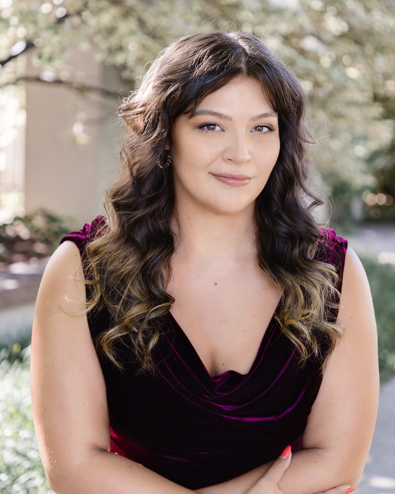
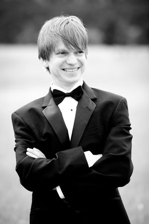

The Boulder Messiah Sing-Along is pleased to present our soloists for the 2022 performances.
|
Soprano: Lisa Atkins
Lisa Atkins was born in Boulder and received her Bachelor's of Music from CU and her Master's of Music from Wichita State University. She has been teaching K-12 music and theater for over 20 years and is currently the music and theater teacher at RMCA. She spent five years as Director of Youth Theater at The Art Underground in Louisville, Colorado. Lisa is a former conductor of the Rocky Mountain Chorale and former Assistant Conductor of the Boulder Chorale. She has performed both the Soprano and Mezzo-Soprano solos with the Boulder Messiah Sing-Along and acted as the vocal coach for the Messiah choir for the past 19 years. Some of her favorite roles have been Little Buttercup in HMS Pinafore by Gilbert and Sullivan and Secretary in Menotti's The Consul. In addition to singing she enjoys doing puzzles, sewing, and amateur interior decorating. Lisa lives in Erie with her incredible husband Jason and their two remarkable daughters. |
|
|  |
Alto: Kim Stanish
Kim Stanish, mezzo-soprano, is a native of Denver, Colorado. She recently performed the title role in Carmen at Miami Classical Music Festival and the roles of Frida Kahlo and Alicia in Frida Kahlo and the Bravest Girl in the World with Central City Opera’s Touring Company. In 2021, she performed La Bergère, La Chatte, and L’Écureuil in Boulder Opera Company’s L’Enfant et les Sortilèges, Nancy in Albert Herring at Miami Classical Music Festival, and Dritte Dame in Die Zauberflöte at the University of Denver. She was featured in opera scenes as Isabella (L’Italiana in Algeri) and Ježibaba (Rusalka) at the University of Denver, and as Lupe Marin/Mrs. Rockefeller in Frida (2019 Opera Artist Institute, Opera Steamboat). Stanish holds a Master of Music in Vocal Performance from the University of Denver, a Bachelor of Music in Vocal Performance and a Bachelor of Arts in Environmental Policy, both from Western Washington University. |
|
Tenor: Benjamin Boskoff
Mr. Benjamin Boskoff is a graduate of The University of Michigan School of Music (MM) and is currently working on his Doctorate of Musical Arts under Dr. John Seesholtz at The University of Colorado, Boulder. An active vocal artist, Mr. Boskoff is actively engaged in productions, recitals, and chamber concerts in the United States and abroad, most recently in the Czech Republic. Mr. Boskoff specializes in the Bel Canto repertoire, the music of Benjamin Britten, and chamber music in both concert and recital settings. Highlights include: Peter Quint in Turn of the Screw with Red River Lyric Opera, Count Almaviva in The Barber of Seville with Light Opera of New Jersey, Prince Ramiro in La Cenerentola with Opera MODO, and Count Ory in Le Comte Ory with Lawrence University as a special guest artist. Mr. Boskoff has been a resident artist with Opera North and a primary soloist for the Bach Society Houston. For more information please visit: Benjaminboskofftenor.com |
|
|  |
Baritone: Sebastian Schmidt
Baritone Sebastian Schmidt is a native of Leipzig, Germany. Music has been part of his life since childhood. He studied the piano for twelve years and joined the children's choir of the Leipzig Opera at age eight. As an adult, he sang in Leipzig's Gewandhaus and University Choirs. He studied physics in Germany and Scotland, earned his PhD in Meteorology in 2005, and has worked at CU's Laboratory for Atmospheric and Space Physics since then. He studied voice with teachers in Germany, Austria and Colorado. In Boulder, he has sung with the Boulder Bach Chorale, CU Opera, and Grace Lutheran Church, where he enjoys singing choral and solo repertoire. |